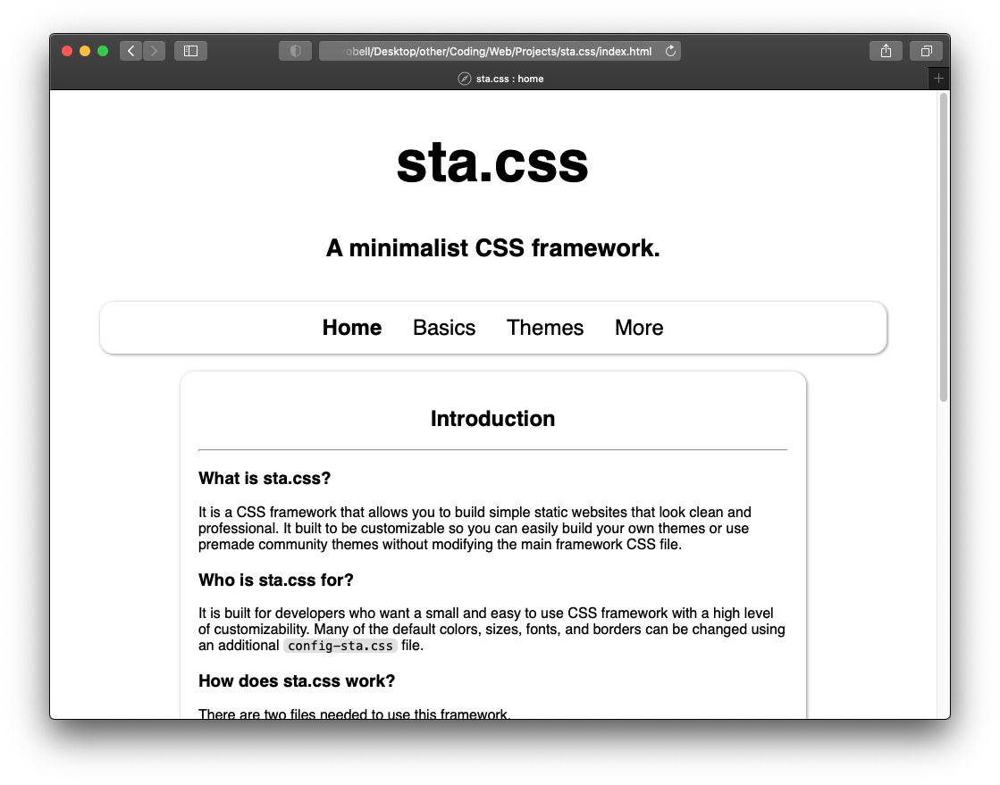

You can create custom themes for this framework or use those created by the community. A few basic themes are included below. To add a theme to your project place the corresponding config-sta.css file in the same directory as the sta.css file. To create a custom theme you need to modify the config-sta.css file.
Information on creating your own themes and more is available here.

To create a custom theme you should start by visiting this page in the wiki. Below is a template config-sta.css file which includes all the editable CSS variables used in this framework.